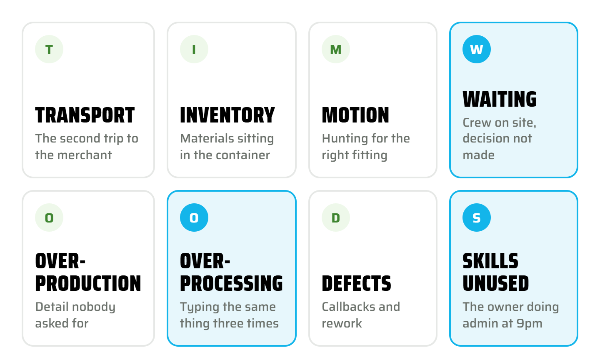
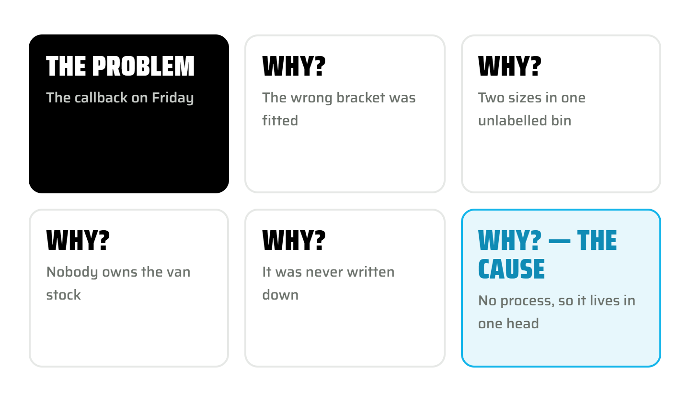
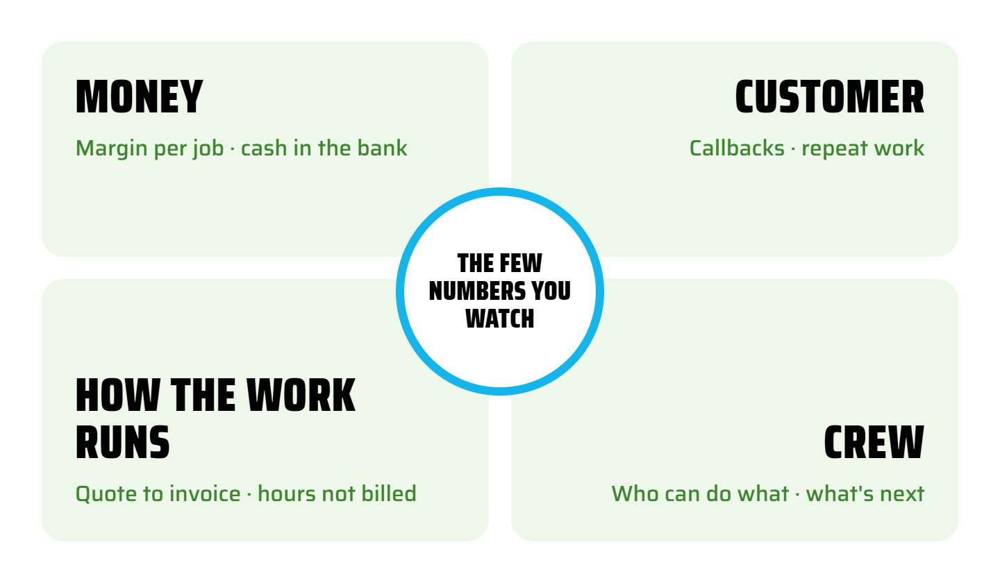
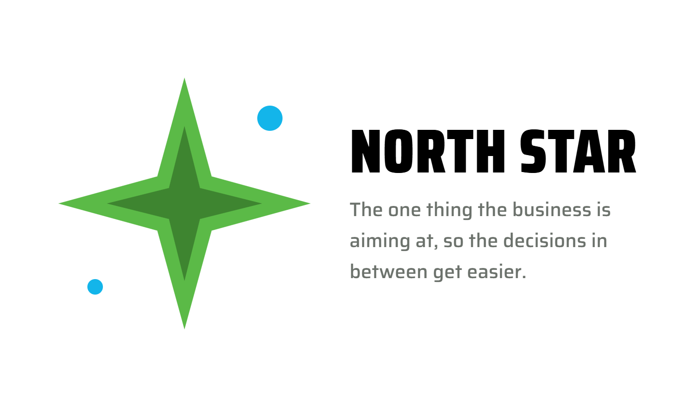

The KaizenTradie.


The Kaizen Tradie.Six tools. Learn them on your own job.
Kaizen means small improvements, every day. These six tools are how I run my own bookkeeping business and how I mentor. This handout is written to teach you to fish: each tool has a page, what it is, how I actually use it, and an AI prompt so you can work it through with your own AI project. Then come to me with the questions about applying it.
It is the one with a visible result by Monday. Once you have used two or three tools on real jobs, you will find your North Star has written itself — you will know what the business is aiming at. Do not start there.
How to use this handout
One tool at a time. Never more than one every two weeks. Read the page, use it on one real job or one real problem, then move on.
Take it to your AI. Each page has a prompt. Paste it into your own AI project along with your answers. Let the AI ask you the next question — that is the point.
Then look wider. Search YouTube for real trade businesses using these tools and using AI — a builder's 5S, a plumber's job workflow. See what they did, not what a consultant says.
Then ask me. Bring the application questions to a session: "I tried this, here is what happened, what next?"
Why I keep coming back to this.
I hold a Diploma in Lean Systems and I have used what is in it every working day for fourteen years — in my own bookkeeping business, in the checking tools I built, and in seven years of mentoring trade and service businesses. Of everything I bring to a session, this is what mentees tell me was the most useful. Not the tax knowledge, not the software. The way of seeing the work. This book is six tools, a page each, with how I actually use each one and an AI prompt so you can teach yourself. It ends with a glossary, because without the words you cannot have the thinking.
A business changes when the owner becomes a Kaizen tradie. Staff follow. The culture changes. The owner leads — it does not work the other way round.
A process business is a ladder
You have heard the pitch: fifteen minutes of marketing a day, ten times the business, you on a beach. You know it is not true. The real work looks like this. A business you can step back from is a process business: many small steps, each one standardised, all lined up under one goal. A ladder. You do not jump to the top. You climb one rung, stand on it until it holds, then the next.
Kaizen names the rungs and gives them an order. Each tool in this book is one rung. Not one of them is a whole business on its own, and that is why they work — you do not have to change everything at once.
Kaizen and lean — use the words interchangeably
Kaizen is the Japanese word — continuous improvement, the Toyota Way, guided by a North Star, focused on calm workflows and an engaged crew. Lean is the American version — more focus on efficiency and profit through cutting waste, and on SMART goals.
You need both names, because on YouTube you will find lean businesses and kaizen businesses talking about the same thing. In practice treat them as one. The differences are for textbooks, not for a Tuesday on site.
Six rungs. Climb them in the order that suits you.
This is the order I suggest: start with 5S because the result is visible by Monday, finish with the North Star because it writes itself once you have used the others. But it is a ladder, not a programme. Take the rung that fits what is bugging you this month, stand on it for two weeks, then the next. Not sure which? Four taps at admin4tradies.co.nz/start-here and it hands you one.




Tool 1 · rung one · start here5S
Sort, set in order, shine, standardise, sustain. A place for everything, so nothing is hunted for twice. Built for a workshop floor; works on the ute, the container, the yard, the inbox and the software.
On your job
- Sort — one van, one shelf, one job in the software. Anything not used in a month comes out
- Set in order — the things you use every day within reach, labelled. In software: the job sections in the same order as the quote
- Shine — clean it, and while you clean, notice what is broken. In Xero: close the finished jobs, fix the statuses
- Standardise — the same setup every time, written on one page
- Sustain — a ten-minute Friday check so it stays true
Every client's Xero is set up the same way and every email I send has the same shape — a heading per section, the decision in bold, the screenshot under the point it proves, a roadmap, action steps with who and by when. That is 5S applied to communication. People can find what they need, so nothing is asked twice.
Pick one place first — the ute, the container, the job software. Then paste:
I run a small trade business. I want to 5S my [ute / container / job software]. Ask me one question at a time about what is in it and how often I use each thing. Then give me a Sort / Set in order / Shine / Standardise / Sustain plan I can do in one Saturday morning, with a ten-minute Friday check to keep it that way.Tool 2 · rung twoThe eight wastes
The eight ways time and money leak out of a job: transport, inventory, motion, waiting, over-production, over-processing, defects, skills unused. Named on a job you have just finished — not from a slide.
On your job
- Pick one job: finished, invoiced, still fresh
- Go through the eight with whoever was on it. Tradies find three in the first ten minutes
- Circle the biggest. That is your bottleneck — the point everything queues behind
- Treat every frustration on the job as a marker: it points to friction you can fix
Waiting and over-processing are the two I hunt in my own work. Waiting on a client for a receipt is why I moved everyone to bill extraction. Typing the same figure into a checklist, a report and an email is why I built my own checking tools. Every tool I have built started as a waste I got sick of.
Here are the eight wastes: transport, inventory, motion, waiting, over-production, over-processing, defects, skills unused. Here is what happened on my last job: [describe it in plain words, including the frustrating bits]. Which wastes do you see, which one is the bottleneck, and what is the smallest change that would reduce it? Give me one change, not a list.Tool 3 · rung threeThe five whys
Ask why five times to get past the symptom to a cause you can actually change. The callback is rarely the tradesperson's fault; five whys down it is usually a handover, a missing label, or nothing written down.
On your job
- Start with the thing that went wrong — the callback, the double payment, the missed invoice
- Ask why. Write the answer. Ask why about the answer. Five times
- Stop when you reach something you can change on Monday. That is the cause; the rest were symptoms
- Do it with the crew, not to them. The person closest to the work knows why
Every flag my checkers raise has to be answered to an outcome — right as is, fixed, or a query. When the same flag comes up two months running, I go five whys on it. Usually the cause is a supplier set up wrong or a rule nobody wrote down. Fix the cause and the flag stops coming.
Something went wrong in my trade business: [describe it]. Walk me through the five whys one question at a time. After each of my answers, ask the next why. When we reach a cause I can change this week, stop and tell me what the one change is.Tool 4 · rung fourMeetings & KPIs
Short, useful meetings that end with who does what, and the few numbers you watch each time. Four corners: money, customer, how the work runs, crew. Two or three numbers a corner, no more.
On your job
- Fifteen minutes, same day each week, standing up if you can
- Three questions: what did we finish, what is stuck, who owns the stuck thing
- The numbers on one page: margin on the last job, cash in the bank, callbacks, hours not billed
- End with action steps — who, what, by when. Then stop
My month end is a meeting with myself, the same day every month, off one checklist. The numbers I watch are the same for every client: bank rec out by, suspense, GST payable to IRD, PAYE to IRD, who owes, who we owe. Same page, same order. That is why it takes minutes, not an afternoon.
I run a small trade business with [number] people. Help me design a fifteen-minute weekly meeting and a one-page scorecard. Ask me what keeps me awake about money, customers, how the work runs and the crew. Then suggest two or three numbers per corner that I can actually get from Xero or my job software without extra work.Tool 5 · rung fiveSmall & simple actions
One improvement every two weeks. Never everything at once. Plan it, do it, check it worked, act on what you learned — PDCA — then the next one. Value over waste, step by step.
On your job
- Never more than four steps on a roadmap. Never less than two weeks apart
- Step one is always something you can do this week
- If step one is not done, step two waits. No skipping ahead
- Simple beats detailed. If a timesheet takes longer than today, it stops being filled in
Every handout I write is a four-step roadmap, two weeks apart, and so is every client email with a change in it. When I built my checking tools I built one check at a time and used it on real books for a month before adding the next. Overwhelm is the enemy of change — the small step is what actually gets done.
I want to fix [the problem] in my trade business. Give me a roadmap of no more than four steps, two weeks apart, where step one is something I can do this week in under an hour. For each step tell me how I will know it worked. Keep it simple — if a step needs more than one page of instructions, split it or drop it.Tool 6 · the top rung · it comes lastNorth Star
The one thing the business is aiming at, so the decisions in between get easier. Not a mission statement. One sentence you could say to the apprentice, and they would know what to do differently.
On your job
- Do not start here. Use two or three tools first — the North Star comes out of what you found
- Look at what kept coming up: the same waste, the same frustration, the same number
- Write one sentence: "Know the margin on every build before quoting the next" or "No job leaves site without being invoiced that week"
- Test it against a real decision this month. If it did not make the decision easier, rewrite it
Mine is: every client knows their numbers before their accountant does. It took me years of month ends to see it; once I had it, the checking tools, the two-page report and the small-tradie products were all obvious. The North Star does not tell you what to do. It tells you what to stop doing.
Here is what I found using the lean tools on my trade business over the last few months: [paste your notes — the wastes, the five whys, the numbers]. What keeps coming up? Suggest three possible North Star sentences, each one short enough to say to my apprentice. Then ask me which one would have changed a decision I made last month.Read. Try. Research. Then ask.
These handouts are designed so you do not need me for the learning — you need me for the application. The order is deliberate.
Use one tool on one job
Read the page, take the prompt to your own AI project, and let it question you. Do the thing it lands on. Two weeks.
Search for real tradies doing it
YouTube: "5S van setup builder", "plumber job workflow software", "small business AI Xero reports". Watch people in the trades, not consultants. Note what they actually changed.
Bring me the application question
"I tried this, here is what happened, this bit did not fit my business." That is a mentoring session worth having, and it is where I earn my place.
Mentoring through Business Mentors New Zealand is free if you are matched with me there. Otherwise, Exploring Tradie sessions are $275 + GST for two hours — book one, or none.
The words first. Without the words you cannot have the thinking.
Once you have the words you can see the problem, and then you can change it. Read this page before you write your North Star.
Try a tool.Then bring me the question.
Exploring Tradie is how I use this in practice. Two hours, your business on the screen, one problem worked through with the tool that fits it. I do not arrive with a prescription — things are changing too fast for one — we explore what is bugging you this month and keep what works.
What a session looks like
- You bring the frustration — the callback, the job that made nothing, the Sunday paperwork
- We pick the tool and use it on that real job, together, on the screen
- You leave with the thing written, a roadmap of no more than four steps, and a take-home
- Between sessions your own AI project holds the plan; I have shown you how to set it up
Why a bookkeeper
I am inside trade workflows every day — the quotes, the bills, the payroll, the job software — and I build and use AI on them. That is where you find out which tool fits and where AI helps. A coach works from what you tell them. I work from what is actually in your Xero.
Fourteen years in the books. Diploma in Lean Systems, Master in Business, Diploma in Accounting. Seven years a volunteer with Business Mentors New Zealand.
Get in touch
Free if you are matched with me through Business Mentors NZ. Otherwise $275 + GST for two hours — book one, or none. Christchurch, Canterbury, and anywhere in NZ on a screen.